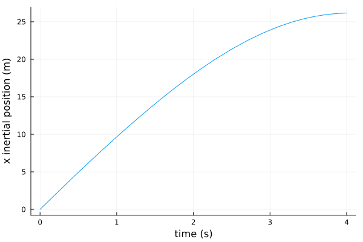
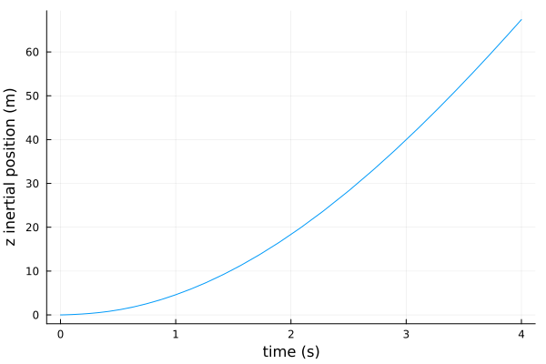
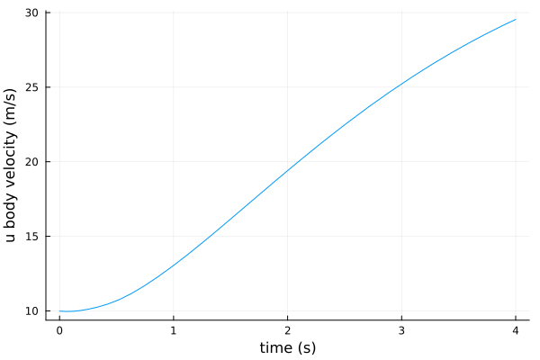
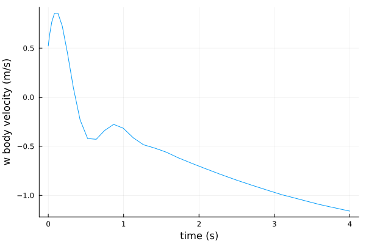

Guide
Basic Usage
First, we import the module.
using SixDOFThere are several structs we need to define. The inputs used in this example correspond to the Zagi flying wing in Appendix E of Small Unmanned Aircraft: Theory and Practice by Beard and McLain. We specify the mass properties:
SixDOF.MassProp — Type
MassProp(m, Ixx, Iyy, Izz, Ixz, Ixy, Iyz)Mass and moments of inertia in the body frame. Ixx = int(y^2 + z^2, dm) Ixz = int(xz, dm)
Most aircraft are symmetric about y and so there is a convenience method to specify only the nonzero components. MassProp(m, Ixx, Iyy, Izz, Ixz)
For this example:
m = 1.56
Ixx = 0.1147
Iyy = 0.0576
Izz = 0.1712
Ixz = 0.0015
mp = MassProp(m, Ixx, Iyy, Izz, Ixz)Next, we specify reference areas and lengths:
SixDOF.Reference — Type
Reference(S, b, c)The reference area, span, and chord used in the aerodynamic computations.
Sref = 0.2589
bref = 1.4224
cref = 0.3302
ref = Reference(Sref, bref, cref)A controller builds off the abstract type AbstractController, which must supply the following method:
SixDOF.setcontrol — Function
setcontrol(controller::AbstractController, time, atm::AbstractAtmosphereModel, state::State, lastcontrol::Control, mp::MassProp, ref::Reference)Compute control state for next time step given current state return control::Control
There is a default implementation in the module, which is just a dummy controller that outputs contant control output
SixDOF.ConstantController — Type
ConstantController(de, dr, da, df, throttle)Just a dummy controller that outputs constant control outputs the whole time.
In this example, we don't use any control deflections. Just throttle, at 80%.
controller = ConstantController(0.0, 0.0, 0.0, 0.0, 0.8)Next, we define the atmospheric model. AbstractAtmosphereModel is an abstract type that must define the following three methods.
SixDOF.wind — Method
wind(model::AbstractAtmosphereModel, state)Compute wind velocities.
Returns
- Wi: wind velocities in inertial frame
- Wb: gust velocities in body frame (just a convenience to allow some velocities in body frame)
SixDOF.properties — Method
properties(model::AbstractAtmosphereModel, state)Compute atmospheric density and the speed of sound.
SixDOF.gravity — Function
gravity(model::AbstractAtmosphereModel, state)Compute the local acceleration of gravity.
There is a default implementation in the module, which is the simplest possible model: one with constant properties:
SixDOF.ConstantAtmosphere — Type
ConstantAtmosphere(Wi, Wb, rho, asound, g)Constant atmospheric properties.
We use that in this example:
Wi = [0.0, 0.0, 0.0]
Wb = [0.0, 0.0, 0.0]
rho = 1.2682
asound = 300.0
g = 9.81
atm = ConstantAtmosphere(Wi, Wb, rho, asound, g)Finally, we now need to define the forces and moments. We provide three abstract types for three types of forces: aerodynamics, propulsion, and gravity. In principle you could use these methods to define forces/moments for any application, but for aircraft this is a convenient separation.
All three forces take in all the same inputs, which include everything discussed so far and the state. The state is an internally used struct that contains the state of the aircraft (or other object).
SixDOF.State — Type
State(x, y, z, phi, theta, psi, u, v, w, p, q, r)State of the aircraft: positions in inertial frame, euler angles, velocities in body frame, angular velocities in body frame.
The AbstractAeroModel abstract type must define the following function:
SixDOF.aeroforces — Method
aeroforces(model::AbstractAeroModel, atm::AbstractAtmosphereModel, state::State, control::Control, mp::MassProp, ref::Reference)Compute the aerodynamic forces and moments in the body frame. return F, M
The default implementation of AbstractAeroModel is one based on stability derivatives.
SixDOF.StabilityDeriv — Type
StabilityDeriv(CL0, CLalpha, CLq, CLM, CLdf, CLde, alphas,
CD0, U0, exp_Re, e, Mcc, CDdf, CDde, CDda, CDdr,
CYbeta, CYp, CYr, CYda, CYdr, Clbeta,
Clp, Clr, Clda, Cldr,
Cm0, Cmalpha, Cmq, CmM, Cmdf, Cmde,
Cnbeta, Cnp, Cnr, Cnda, Cndr)Stability derivatives of the aircraft. Most are self explanatory if you are familiar with stability derivatives (e.g., CLalpha is dCL/dalpha or the lift curve slope). Some less familiar ones include
- M: Mach number
- alphas: the angle of attack for stall
- U0: the speed for the reference Reynolds number CD0 was computed at
- exp_Re: the coefficient in the denominator of the skin friction coefficient (0.5 laminar, 0.2 turbulent)
- e: Oswald efficiency factor
- Mcc: crest critical Mach number (when compressibility drag rise starts)
We use the following values for this example.
CL0 = 0.09167 # Zero-alpha lift
CLalpha = 3.5016 # lift curve slope
CLq = 2.8932 # Pitch rate derivative
CLM = 0.0 # Mach derivative
CLdf = 0.0 # flaps derivative
CLde = 0.2724 # elevator derivative
CLmax = 1.4 # max CL (stall)
CLmin = -0.9 # min CL (neg stall)
alphas = 20*pi/180
CD0 = 0.01631 # zero-lift drag coerff
U0 = 10.0 # velocity corresponding to Reynolds number of CD0
exp_Re = -0.2 # exponent in Reynolds number calc
e = 0.8 # Oswald efficiency
Mcc = 0.7 # crest critcal Mach number
CDdf = 0.0 # flaps
CDde = 0.3045 # elevator
CDda = 0.0 # aileron
CDdr = 0.0 # rudder
CYbeta = -0.07359 # Sideslip derivative
CYp = 0.0 # Roll rate derivative
CYr = 0.0 # Yaw rate derivative
CYda = 0.0 # Roll control (aileron) derivative
CYdr = 0.0 # Yaw control (rudder) derivative
Clbeta = -0.02854 # Sideslip derivative
Clp = -0.3209 # Roll rate derivative
Clr = 0.03066 # Yaw rate derivative
Clda = 0.1682 # Roll (aileron) control derivative
Cldr = 0.0 #Yaw (rudder) control derivative
Cm0 = -0.02338 # Zero-alpha pitch
Cmalpha = -0.5675 # Alpha derivative
Cmq = -1.3990 # Pitch rate derivative
CmM = 0.0
Cmdf = 0.0
Cmde = -0.3254 # Pitch control derivative
Cnbeta = -0.00040 # Slideslip derivative
Cnp = -0.01297 # Roll rate derivative
Cnr = -0.00434 # Yaw rate derivative
Cnda = -0.00328 # Roll (aileron) control derivative
Cndr = 0.0 # Yaw (rudder) control derivative
sd = StabilityDeriv(CL0, CLalpha, CLq, CLM, CLdf, CLde, alphas,
CD0, U0, exp_Re, e, Mcc, CDdf, CDde, CDda, CDdr,
CYbeta, CYp, CYr, CYda, CYdr,
Clbeta, Clp, Clr, Clda, Cldr,
Cm0, Cmalpha, Cmq, CmM, Cmdf, Cmde,
Cnbeta, Cnp, Cnr, Cnda, Cndr)The AbstractPropulsionModel abstract type must define the following function:
SixDOF.propulsionforces — Method
propulsionforces(model::AbstractPropulsionModel, atm::AbstractAtmosphereModel, state::State, control::Control, mp::MassProp, ref::Reference)Compute the propulsive forces and moments in the body frame. return F, M
The default implementation of AbstractPropulsionModel is based on a first-order motor model coupled with a parameterized curve fit of propeller data. The torque for when the motor and propeller are matched is solved for and then used to compute thrust.
SixDOF.MotorPropBatteryDataFit — Type
MotorPropBatteryDataFit(CT2, CT1, CT0, CQ2, CQ1, CQ0, D, num, type,
R, Kv, i0, voltage)Inputs
- CT2, CT1, CT0: quadratic fit to propeller thrust coefficient of form: CT = CT2J2 + CT1J + CT0
- CQ2, CQ1, CQ0: quadratic fit to propeller torque coefficient of form: CQ = CQ2J2 + CQ1J + CQ0
- D: propeller diameter
- num: number of propellers
- type: CO (torques add), COUNTER (torques add but with minus sign), COCOUNTER (no torque, they cancel out)
- R: motor resistance
- Kv: motor Kv
- i0: motor no-load current
- voltage: battery voltage
This example uses data roughly corresponding to an APC thin electric 10x5
CT0 = 0.11221
CT1 = -0.13803
CT2 = -0.047394
CQ0 = 0.0062
CQ1 = 0.00314
CQ2 = -0.015729
D = 10*0.0254
num = 2
type = COCOUNTER
R = 0.5
Kv = 2500.0 * pi/30
i0 = 0.3
voltage = 8.0
propulsion = MotorPropBatteryDataFit(CT2, CT1, CT0, CQ2, CQ1, CQ0, D, num, type, R, Kv, i0, voltage)Finally, the AbstractInertialModel must implment the following function
SixDOF.gravityforces — Method
gravityforces(model::AbstractInertialModel, atm::AbstractAtmosphereModel, state::State, control::Control, mp::MassProp, ref::Reference)Compute the gravitational forces and moments in the body frame. return F, M
The default implementation ($UniformGravitationalField$) assumes that the center of mass and center of gravity are coincident and so there is no gravitational moment. The default will likely be used most of the time as that condition is true for almost all applications, except perhaps some spacecraft in high orbits where small gravitational torques may matter.
inertial = UniformGravitationalField()The main function is
SixDOF.sixdof! — Function
sixdof!(ds, s, params, time)dynamic and kinematic ODEs. Follows format used in DifferentialEquations package.
- s = x, y, z, phi, theta, psi, u, v, w, p, q, r (same order as State)
- params = control, massproperties, reference, aeromodel, propmodel, inertialmodel, atmmodel
We rarely use it directly, but rather use it in connection with an ODE solver. In this case the $DifferentialEquations$ package. We start with an initial velocity at an angle of attack and simulate for four seconds.
import DifferentialEquations
Vinf = U0
alpha = 3.0*pi/180
s0 = [0.0, 0.0, 0.0, 0.0, 0.0, 0.0, Vinf*cos(alpha), 0.0, Vinf*sin(alpha), 0.0, 0.0, 0.0]
tspan = (0.0, 4.0)
p = mp, ref, sd, propulsion, inertial, atm, controller
prob = DifferentialEquations.ODEProblem(sixdof!, s0, tspan, p)
sol = DifferentialEquations.solve(prob)We can plot the results. For example the linear positions and velocities. The y-components are not plotted in this case, because they are all zero as there are no control deflections or wind that would cause lateral motion in this example.
using Plots
plot(sol.t, sol[1, :]; xlabel = "time (s)", ylabel = "x inertial position (m)", legend = false)GKS: cannot open display - headless operation mode activeplot(sol.t, sol[3, :]; xlabel = "time (s)", ylabel = "z inertial position (m)", legend = false)plot(sol.t, sol[7, :]; xlabel = "time (s)", ylabel = "u body velocity (m/s)", legend = false)plot(sol.t, sol[9, :]; xlabel = "time (s)", ylabel = "w body velocity (m/s)", legend = false)



Additional Helper Functions
A few other helper functions exist. These first three create rotation matrices from one coordinate system to the body frame. All of these rotation matrices are orthogonal so the inverse of the matrix is just its transpose.
SixDOF.inertialtobody — Function
inertialtobody(state)Construct a rotation matrix from inertial frame to body frame
The assumed order of rotation is
- psi radians about the z axis,
- theta radians about the y axis,
- phi radians about the x axis.
This is an orthogonal transformation so its inverse is its transpose.
SixDOF.windtobody — Function
windtobody(alpha, beta)Rotation matrix from wind frame to body frame.
- alpha: angle of attack
- beta: sideslip angle
SixDOF.stabilitytobody — Function
stabilitytobody(alpha, beta)Rotation matrix from stability frame to body frame.
- alpha: angle of attack
Another function extracts airspeed, angle of attack, and sideslip from the body motion and wind.
SixDOF.windaxes — Function
windaxes(atm::AbstractAtmosphereModel, state)Compute relative velocity in wind axes (airspeed, aoa, sideslip)